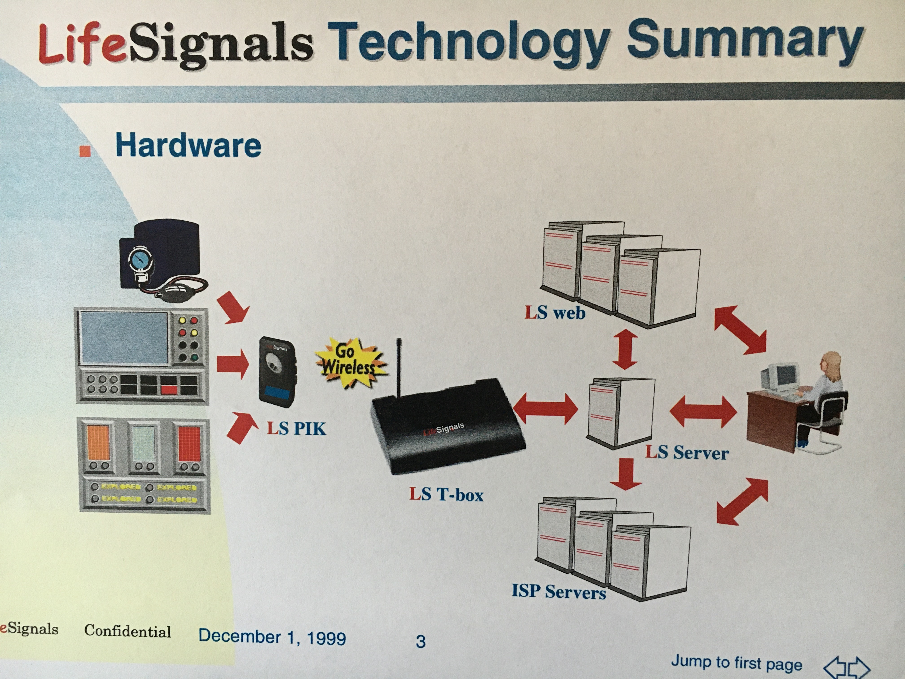
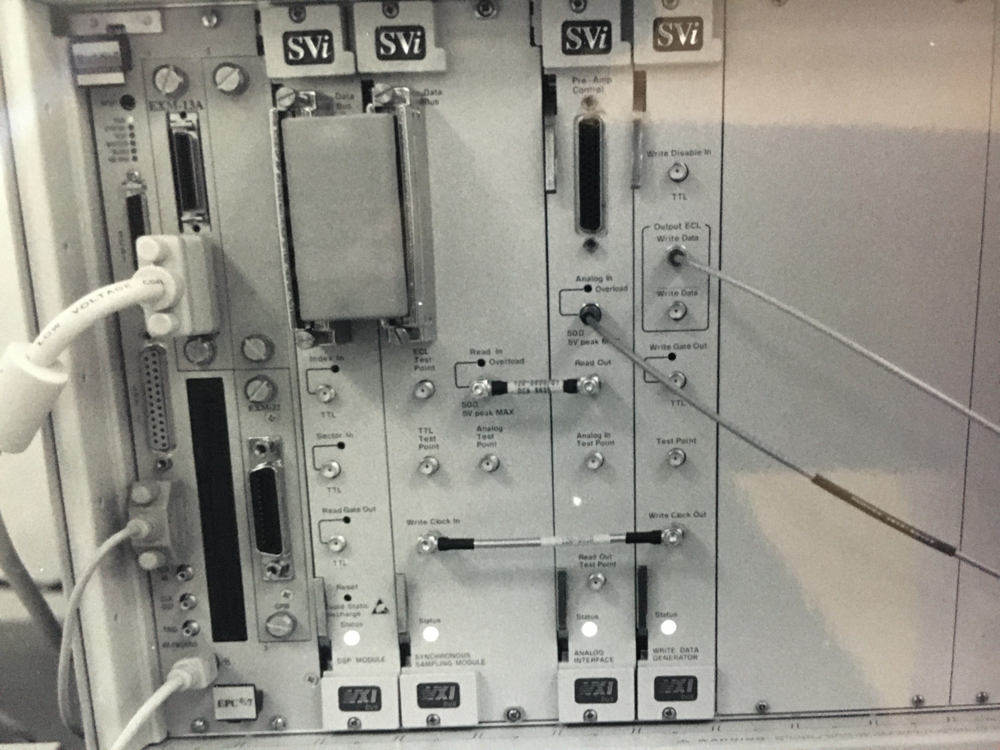
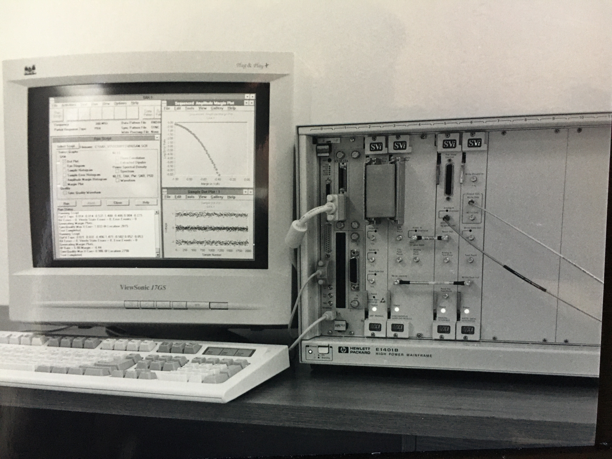

Work History
Experience
The R Consortium
The R Consortium is an independent, non-profit organization associated with the Linux Foundation with the mission to support the R Language, the R Community, and the R Foundation. I have been associated with the R Consortium since the early planning stage in 2014. Thereafter my responsibilities and commitment have increased.
- ISC member and RUGS program lead 2015 to present
- Board Director July 2016 to July 2023
- Secretary 2017 to 2019
- Board Chair and de facto general manager from 2020 to July 2023
- Executive Director July 2023 to the August 2024.
ProCogia, Vancouver, BC, July 2023 - July 2024
ProCogia graciously supported my work at the R Consortium.
Posit, PBC (formerly RStudio PBC) Boston, MA July 2016 - July 2023
R Community Ambassador
I was recruited by RStudio to represent the company on the Board of Directors at the R Consortium
- R Consortium Director
- Member of the Marketing Department
- Editor of the R Views Blog
Microsoft Corporation April 2015 to July 2016
Data Scientist
I became a Microsoft employee when Microsoft acquired Revolution Analytics. The acquisition was driven by Microsoft’s desire to incorporate Revolutions proprietary R-based statistical software into SQL Server. Microsoft initially kept the Revo team together. Eventually, however, I moved to the AI data science group led by Joseph Sirosh.
Responsibilities included:
- data science work
- Representing Microsoft in the R Community
- Managing the Microsoft R user group support program
- Contribution to the Revolutions Blog
Revolution Analytics (Originally REvoluting Computing) Palo Alto, CA 2010 January 2010 to April 2015
Technical Marketing manager
I assumed several different roles ar Revo as the company grew including technical sales support, technical marketing, data scientist and blogger.
- Worked with large customers to help them evaluate the performance of Revolution Analytics products
- Built “Big Data” Models to demonstrate the feasibility of doing standard statistical analyses such as logistic regression on very large data sets.
- Set up network clusters to demonstrate the feasibility of doing parallel computations on large data sets with acceptable run time.
- Regularly wrote technical posts for the Revolutions Blog
- Represented Revo to the R community at numerous conferences and trade shows
- Managed Revo’s R User Group Support Program
Cedar Associates LLC, Menlo Park, CA. February 2007 to December 2009
Research Analyst / Statistician
Cedar was a small, Healthcare Economics, consulting firm specializing in clinical effectiveness and decision analytic research
- Conducted network meta-analyses to evaluate the cost effectiveness of new drugs
- Worked on a team to support the J&J proposal NICE and other regulatory agencies to establish VELCADE® (bortezomib) as an alternative to standard care for first-line and refractory treatment of Multiple Myeloma.
- Co-authored two papers on the cost-effectiveness of bortezomib that were published in the medical literature. (See publications)
- Coded discrete event and Monte-Carlo simulations to support statistical analyses
- Performed background research on Pub Med and other platforms
Marketing Mechanics, San Jose, CA May 2005 to November 2006
Co-founder and Partner
MM provided full service executive-level marketing services to its corporate clients including: go-to-market strategies, product forecasts, pricing models, estimates of market size, etc.
- Clients included VeriSign and Cisco
Wavecrest Corp. Eden Praire, MN February 2004 to May 2005
District Sales Manager- SF Bay Area
Wavecrest manufactured laboratory test equipment. For example, he Wavecrest SIA 3000 Signal Integrity Analyzer provided up to 8 differential inputs to analyze and control jitter, an essential quality in a time when clock speeds and data rates.
- Dismal sales job in a competitive market
- The one bright spot was to have a desk next to Dr. Mike Li, The chief Technical Officer and learn the rudiments of jitter analysis.
Marketing Consultant
Specialized in projects that required a high level of analytic proficiency along with written and verbal communication skills including: quantitative market modeling, forecasting, risk analysis for competitive analysis, primary and secondary market research. Sample projects
- Monte Carlo based simulations to analyze risk, and aid in the selection of new products for the marketing group of a large software company
- Analyzed and documented the Laboratory Information Management System for a California Biotechnology Company written in PL/SQL and Java)
- An Excel-based cost model for a Pennsylvania Video-conferencing company that allowed NPV and other ROI analyses.
- Developed a business strategy for a non-profit San Francisco medical foundation.
Agilent Technologies, Mt. View, CA September 2000 to September 2001
Account Manager
- Member of an international sales team in Agilent’s Semiconductor Test Equipment, Subcontract Manufacturing group that sold 93000 class test systems
- Managed large, multinational accounts including ASAT and ChipPAC
- Worked with a number of IC “start-up” companies to cultivate new business.
- Persuaded Agilent management to investigate the feasibility of offshore, applications engineering teams
LifeSignals, LLC November 1999
Co-Founder along with Carl Xiaodong Che and President
LifeSignals was founded to provide network devices, analytical software and internet applications to automate the collection of vital signs. The initial application was to help solve the early discharge problem by enabling hospitals to discharge patients as soon as possible, monitor them at home, and recall them to the hospital before needing an emergency intervention.
For a time, the company was cultivated by U.S. Venture Partners for some time. Under their guidance, the company incorporated, expanded the founding team to expand a more experience CEO, a CFO, a Chief Medical Officer, and began the process of applying for patents. In the end, USVP declined to fund, being unwilling to finance the process of securing medical billing codes that was believed to have been necessary. LifeSignals was twenty years too early.

Phase Metrics, Fremont, CA March 1998 to November 1999
Senior Sales Executive
Phase Metrics (now Diamond Division of KLA-Tencor) was a leading supplier of test and process equipment to the disk drive industry.
- Major accounts included Seagate, Quantum, Western Digital and Maxtor
- Sold servo track writers and optical media testers based on Raman Spectroscopy technology and was successful in selling against internal engineering development groups
Scotts Valley Instruments (SWAN), Inc. Los Gatos, CA March 1994 to March 1998
Vice President of Sales and Marketing, Co founder, and 5% Shareholder
SVi developed advanced digital signal processing based test instrumentation for the magnetic recording industry. Angel investors provided initial funding of $1.1M; Hewlett-Packard the remaining $1.9M under an exclusive, worldwide OEM agreement.
- SVi was acquired by Swan in 1997.
- Responsible for all Sales and Marketing activities I helped to write * Accelerated revenue by identifying and closing the “early adopter” customers: HP, IBM, Komag and Maxtor
- Guerrilla marketing included founding and managing a new IDEMA industry standards committee for the explicit purpose of developing industry contacts


Parallan Computer, Inc. Mountain View, CA 1991 to 1994
Product Marketing Manager
Parallan (Revenue $20) developed Raid 5 servers on IBM hardware completed an IPO in 1993 on the strength of its exclusive distribution and support agreement with IBM.
- Managed server and network management products from conception to launch
- Developed PRDs MRDs and produced competitive analyses and market forecasts
- Proposed and implemented a low cost telemarketing effort that helped close key sales and prove that telemarketing could play a decisive role in marketing high-end products.
- Developed a product and sales training courses and conducted on-site training for IBM Europe.
- Served as liaison to Microsoft for SQL Server products, working with senior IBM executives in the UK, France, Denmark, Germany and Austria on the European launch of the Parallan/IBM flagship server product
- Persuaded Syncrude, Canada not to return a $1M sale
Alantec, Inc., Fremont, CA 1988 to 1990
Sales Manager
Founded in 1988 (IPO 1994), Alantec invented Ethernet switching and was one of TA Associates and Accel Partners’ biggest successes.
- I established Alantec’s European and Japanese Distribution networks
- served as National Sales Manager and at different times, Regional Sales Manager for all three U.S. regions.
- Performed early product marketing, public relations and marketing communications work.
Virtual Microsystems, San Mateo, CA 1987 to 1988
Director of Marketing
Virtual pioneered the introduction of PC technology into minicomputer environments.
- Managed marketing OEM Sales that included a $1M contract with Ungermann-Bass
- Established Federal Government reference accounts
Sytek, Inc. Mountain View, CA 1982to 1987
Associate Director of Systems Integration
Sytek (acquired by Hugh’s LAN Systems) was an early broadband LAN Company. With $50M in annual revenue.
- I developed systems integration as a new business area,
- Work with the US Military included interacting directly with General Emett Paige to satisfy the US Army’s Information System Command
- Managed the proposal effort for the USAF’s ULANA project
- Wrote Sytek’s strategic plan
- Led a team in Japan to negotiate with Sumitomo Electric for fiber optic technology
- Led a joint IBM/Sytek performance modeling team working on NSA projects. Held SI level security clearances
- Selected for two 100% clubs
LOGICON, INC., Lanham, MD 1980 to 1982
Performance Analyst
- Built mathematical models for classified DoD projects. Analyst
- Evaluated performance of algorithms implemented on UNIX systems
Computer Sciences Corporation, Greenbelt MD 1979 to 1980
Programmer Analyst
- Worked on simulation models at the Goddard Space Flight Center in support of unmanned rocket launches
- Worked on the performance evaluation of the Goddard Real Time System (GRTS)
- Led task to document methodology for replacing a computer information system
- Member of team that planned performance studies to support Shuttle/TDRSS GRTS support
- Programmed in Fortran on IBM 360 mainframe computers
Decision Sciences Corporation, Jenkintown, PA (July 1977 to May 1979)
Systems Analyst and Software Developer
Decision Sciences was a management consulting firm that developed proprietary FORTRAN based software for clients that included, interactive sales forecasting, inventory modeling, and “what if” financial modeling.
Responsibilities included:
- Supervising programmers
- Sales support and client presentations
National CSS, Inc. Phila., PA (January 1977 - July 1977)
Technical Representative
National CSS was a time sharing company (VP/CSS). My responsibilities included:
- Technical support
- The design and implementation of databases using NOMAD.
The Manufacturers Appraisal Company, Phila.,PA (June 1975 to December 1976)
Analyst / Appraiser
Responsibilities included:
- Background research to support appraisals
- Programming and analysis for an accounting system
- Supervising data entry personnel.